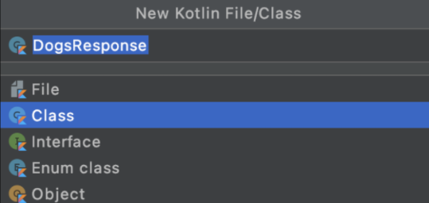

In this topic we will see how to obtain / send information from / to the Internet. For this we will use REST services
What is an API Rest?
We could define REST API as a service that provides us with the functions we need to be able to obtain information from an external client,
such as a database hosted anywhere in the world from within our own application.
Let's think about Instagram, an application with millions of users. It is not feasible to have the information of each user within the application, right?
Well, to solve the problem they use REST API services. The first thing we do when entering the app is a login, this would be the first of the services,
since we send the server the username and password and this would return the information that we
must show in the app.
We have four different types of requests as a general rule.
Get: These are the simplest requests, they only return information.
If we need to pass a parameter to the request, it will be through the url. That is, if, for example, we have to make a request that depends on an id
(eg the user's identification), the url would be formed like this https://example.com/information/1, with 1 being the parameter that we pass to it.
The problem with this is that it is not very secure to pass sensitive information.
Post: Similar to Get but the parameters are not passed by url, so it is safer to send information.
Put: It is usually used to create the entity, that is, if we think of a service as access to a database,
this would create the user for example.
Delete: It would be the last of the four that would allow us to delete the records from the database
The information usually comes in two different formats, XML or JSON.
In order not to get too deeply into the subject, we will only talk about JSON, which is the most common format and with which
we are going to work.
JSON format
Json is a simple text format, it is the acronym for JavaScript Object Notation.
It is one of the standards for the transfer of information between platforms, it has a very legible form that allows us to understand its content without problem.
A simple example would be this.
Every Json format begins and ends with braces and has a key-value. The employees key contains in turn a list of employee (note that instead of braces it has brackets),
which stores id, firstName, lastName and photo. Thus we can pass a large amount of information from one platform to another with some standards that help us
simplify the process.
If it is still difficult for you to read these files at the beginning, we can make use of a multitude of websites that simplify the way of seeing it, such as
JsonEditOnline.
There are many free APIs (some of them with registration) that we can make use of. It is enough to do a search in Google and find almost the theme that we are looking for.
To show a basic example of using Glide, we will implement a simple application that will load images when the button is pressed.
Using glide
Every time we press the button, the application will make a call via Glide to the page https://picsum.photos/ .
This website offers us a random image of a certain size.
So what we will do is add the listener to the button:
private fun changeImage() {
val url = "https://picsum.photos/200?rand=" + Random.nextInt()
Glide.with(requireContext())
.load(url) //Image that we want to show
.placeholder(getDrawable(requireContext(),R.drawable.loading)) //Image that will be displayed while loading the image to be displayed
.error(ERROR_IMAGE) //Image that we will show if something goes wrong. it is typically use a drawable image stored
.into(binding.ivImage) //ImageView that will contain the image
}
As you can see, we have added a random parameter to the url, this is simply so that it interprets that it is a different url and not take it from the cache.
To use Glide we use its methods:
with , to which the context is passed.
load the location of the image to be loaded, it does not have to be a url on the internet.
Placeholder tells us which image to display while the image is loading.
error tells us which image to show in case the image cannot be loaded
into tells us where to load that image.
Mandatory are only the with , the load and the into .
Alternatively we can add how we want the image to be displayed inside the ImageView using methods like centerCrop(),
centerInside() , fitCenter(). I encourage you to try them.
Also comment that there is another fantastic library to obtain images from the Internet called
Picasso . I also recommend that you take a look at it.
A basic use would be this.
Picasso.get().load(url).into (imageView)
As you can see, it is very similar to using Glide.
Retrofit 2
In this section we are going to create a complete app, it is a dog finder.
That is, in the search engine we are going to put a breed of dog (in English) and we will retrieve images of that breed that we will show in a RecyclerView,
that is, we will access the internet to show images that our app does not have.
The API, that we will use, will be Dog API , it is completely free and has a simple and
practical documentation. If we go to documentation we can see all the types of call that there are, we will be interested in only one By breed.
The call will be as follows:
https://dog.ceo/api/breed/hound/images
Note that if you open it in the browser itself, a JSON similar to this one will appear
And this is basically what our app will do.
You will access the internet, make a request similar to this to retrieve the information, and then modify it so that our application can understand and paint it.
The first thing we will do is create a new project called, for instance, DogList.
Once we have our project created we will have to request internet access, since our app will connect to consume the API that we discussed earlier.
For this we go to the AndroidManifest.xml file of our project and at the top we add the necessary permission.
The next step will be to import the necessary libraries that we will use in our app.
As always all these libraries are added in the build.gradle file of the app module
The libraries that we are going to import are the following:
Picasso: This library will allow us to transform those urls into images.
Retrofit 2 : Library in charge of API consumption.
Retrofit 2 Converter Gson: This tool will be a complement to the previous one and will simplify the process of passing a JSON
to a Data Class, which is what we will work with in our project.
Coroutines : Among many other things, it will allow us to make Retrofit requests in the background
so as not to block the user interface.
As you know, the libraries are being updated, worse today the latest versions are the ones that I am going to put here
Don't forget to enable the viewBinding and sync up
Now it is time to go to our MainActivity and we will finish implementing the View Binding.
MainActivity
class MainActivity : AppCompatActivity() {
private lateinit var binding: ActivityMainBinding
override fun onCreate(savedInstanceState: Bundle?) {
super.onCreate(savedInstanceState)
binding = ActivityMainBinding.inflate(layoutInflater)
setContentView(binding.root)
}
}
The next thing will be to create the view. We are going to activity_main.xml and we will add two components,
a RecyclerView that we already know and a SearchView, a very simple component that will allow us to implement a
quick search engine.
We already have almost all the visual part of the app in a moment, but now we have to move on to our data model.
That is, remember that the API will return a JSON to us and we have to convert it
into a Data class .
For this we have to look at the JSON structure of our API, in this case it is quite simple.
To begin we have a message field that is basically a list of Strings , they are image urls but they are only text
and we also have the status field that will contain the success value if everything has gone well so it will be another String .
We are going to create a new class, in the same directory where we have the MainActivity we right click New> Kotlin File / Class
and we will call it DogsResponse. Before push enter make sure to select Class
 Creating our Data Class
To convert our class into a data class we will only have to add the reserved word data before class
and we will get an error because we will have to remove the curly braces and it must have at least one parameter,
in this case we will put the two that we've mentioned above.
data class DogsResponse(var status: String, var message: List<String>)
This is how our class would look, notice that the name of the fields is exactly the same as that of the JSON, it is mandatory to be able to retrieve the information from the JSON and pass it to our data model.
But here I see a problem and that is that I do not like this name message since it does not seem descriptive,
but as I have commented, the name has to be exactly the same as the JSON.
Obviously there is a solution to this dilemma and that is to use the SerializedName annotation, this annotation will make us a "bridge"
between the required name and the name we want to use .
DogResponse.kt
import com.google.gson.annotations.SerializedName
data class DogResponse(
@SerializedName("status") var status: String,
@SerializedName("message") var images: List<String>)
Look what we have done, before defining each variable I have used @SerializedName and in parentheses we have put the exact name
that appears in the JSON, so with that we can call our variable as we want, in this case we have called message as images.
We will put this annotation whenever we work with Retrofit .
APIService
The next thing we will do is create the contract that defines the Retrofit call, that is, we will create an interface that will define the type of
API consumption and what it will return.
We will create an interface in the same way that we create a class, New Kotlin File / Class , we will select
interface and we will call it APIService .
In this interface we are only going to define the method that Retrofit will use and its configuration.
Let's analyze the previous code, to begin with we are going to select the type of call that it is (remember at the beginning of the chapter that there were four types
GET, POST, PUT and DELETE). In this case it will be of type GET and for this we use the tag @GET.
Notice that before the word fun there is a reserved word called suspend,
remember this will be necessary to work with coroutines, that is, whenever we want to make calls in the background using coroutines we will have to add
it for our code to work.
Before continuing I want you to remember the url of the API that we are going to use.
https://dog.ceo/api/breed/hound/images
If we look a little more we can see that there are two parts in this url, the first would be https://dog.ceo/api/breed/
which is the immutable part , that is, this part will always be fixed. Then you have to pass dog breed followed by /images, so we could say that hound/images
is the mutable part . Why am I emphasizing this? Well, because the second part of the url "breed_of_dog/images" we will have to pass as a parameter,
and even if it is a String we have to put the tag @Url at the beginning.
We already understand almost all the function we have written, we are missing the answer.
Everything that comes from Retrofit will be captured through the Response class, which is why we will
always return a Response<OurDataModel> , in this case Response<DogsResponse>
Installing Retrofit 2
The complicated part is over, but obviously we are not using Retrofit yet, so for that we go back to our MainActivity.
This Retrofit instance that we are going to create will be the one with the rest of the endpoint url,
it will be in charge of converting the JSON to DogResponse and it will have all the configuration to make the API call.
MainActivity
//Creates an instance of Retrofit
private fun getRetrofit ():Retrofit {
return Retrofit.Builder ()
.baseUrl ("https://dog.ceo/api/breed/")
.addConverterFactory(GsonConverterFactory.create())
.build()
}
Our getRetrofit() function will return a Retrofit instance.
To configure it, notice that we call the .Builder () function and once we have done it we will add the baseUrl
(which is the fixed part of our API) and then add .addConverterFactory (GsonConverterFactory.create (),
this line will implement the library of the principle that will do all the work of retrieving the JSON and passing it to DogsResponse.
For all this to apply we end up with .build ()
Thread handling with coroutines
Within our coroutine, we create a variable called call that will be in charge of calling the method that Retrofit
returns (the one we created before) and that Retrofit instance we will have to call the create () function,
which will receive the interface we want (we can have multiple interfaces to retrofit) and doing that will allow us to call the getDogsByBreeds()
function.
MainActivity
private fun searchByName(query:String){
CoroutineScope(Dispatchers.IO).launch {
val call = getRetrofit().create(APIService::class.java).getDogsByBreeds("$query/images")
}
}
Look at the text that we're passing to the getDogsByBreeds () function,
if you look earlier when creating Retrofit we put the fixed route of the API, but we were missing "dogBreed/images"
that's just what we sent, the query variable will contain the race and we have to put it together with the final part of the /images call.
Now our call variable will contain a Response<DogsResponse> , notice that it is like our data class but
with a Response on the outside, since it is what our method returned in the Retrofit interface.
This response object can be very useful, since calling call.isSuccessful() will tell us if the call has gone well, and then to retrieve
the real DogsResponse object, we just have to call call.body() .
MainActivity
private fun searchByName(query:String){
CoroutineScope(Dispatchers.IO).launch {
val call = getRetrofit().create(APIService::class.java).getDogsByBreeds("$query/images")
val puppies = call.body()
if(call.isSuccessful){
//show Recyclerview
}else{
//show error
}
}
}
}
Our function would look like this for now, the only thing I have added since I showed the code is the creation of the variable puppies
that should contain our DogsResponse and an unfinished if that will check if the call has worked correctly.
If it went well we will create a RecyclerView , otherwise we will show an error.
RecyclerView
As you already know, a RecyclerView consists of 3 parts, the Adapter, the item_View and the ViewHolder, the first thing we will do is create the item_view,
that is, the design. Inside res> layout we will create a layout called item_dog.xml
As you can see, the design is very simple, it is just a CardView that contains an image, which will be where the image of the searched dog is loaded.
ViewHolder
Now that we have the view done, it is the ViewHolder's turn, so we will create a new class that we will call DogViewHolder.kt
class DogViewHolder(view: View):RecyclerView.ViewHolder(view) {
private val binding = ItemDogBinding.bind(view)
fun bind (image:String) {
Picasso.get().Load(image).into(binding.ivDog)
}
}
This class is very simple, all it has is a bind () function that will be called from the adapter and it will
pass a url in String format, once inside we will use the Picasso library to load that URL into our iVDog.
Adapter
Now we would only have to create a simple adapter, which will receive a list of images (the photos of the dogs). We will call it DogAdapter.
class DogAdapter(private val images: List<String>) : RecyclerView.Adapter<DogViewHolder>() {
override fun onCreateViewHolder(parent: ViewGroup, viewType: Int): DogViewHolder {
val layoutInflater = LayoutInflater.from(parent.context)
return DogViewHolder(layoutInflater.inflate(R.layout.item_dog, parent, false))
}
override fun getItemCount(): Int = images.size
override fun onBindViewHolder(holder: DogViewHolder, position: Int) {
val item = images[position]
holder.bind(item)
}
}
We will return to our MainActivity to finish configuring the RecyclerView,
but first I want you to notice that at the time of creating the activity we do not have images but to create our adapter we need to pass it a list of images,
also that list has to vary when changing search, so the data in the RecyclerView has to be able to vary.
For this we go to the top of the class (outside of any method) and we will create an adapter with the lateinit function, that is,
we will initialize it later, we will also create a variable called dogImages that will be a mutableList of Strings.
private lateinit var adapter:DogAdapter
private val dogImages = mutableListOf<String>()
We have created this list of Strings for two reasons, the first one, begins as an empty list and is the one that we will use to create our RecyclerView,
but we will modify the items once the user has searched for a breed of dog and thus we can change the images that are shown in the listing.
Now we can create our initRecyclerView () function.
Although we already have the RecyclerView created, we still do not add data to it at any time. We return to the searchByName() method that we had left halfway.
When we stopped we had to complete the if() , since if everything had gone well we had to update the images and if there was something wrong we had to show a Toast.
But if you think about it, both actions are visual, that is, they are interface and that means that you have to do it in the main thread and we are inside a coroutine.
In order to get out of that coroutine we will use runOnUiThread{} and everything between those braces will be done in the main thread
even if it is inside a coroutine.
We add the previous code and put the if inside it.
private fun searchByName(query:String){
CoroutineScope(Dispatchers.IO).launch {
val call = getRetrofit().create(APIService::class.java).getDogsByBreeds("$query/images")
val puppies = call.body()
runOnUiThread {
if(call.isSuccessful){
//show recyclerview
}else{
//show error
}
}
}
}
Now we will fill in the if , starting if everything went well.
In order to update the adapter we will have to modify the list of images that the dogImages variable receives,
so what we have to do is add the new images in that variable.
val images = puppies?.images ?: emptyList()
dogImages.clear()
dogImages.addAll(images)
adapter.notifyDataSetChanged()
The first line creates a new variable called images , the images are inside the puppies variable and this variable
is nullable, that means it can be null and can cause an error, so we have to access the images with a question mark first, Well,
we are saying that there may be a list of Strings or there may be a null.
To solve it we will use the elvis Operator?: which will act to control that it is null
and if it is it will return an emptyList() so our images variable can be a list of strings
or an empty list but it will never be null .
Then we call our variable dogImages and clean it so that it does not have any images and now that it is empty we use addAll()
to put all the new images in it. In order for the images to be reloaded in the RecyclerView we will have to call the adapter and its
notifyDataSetChanged() function.
Now we have to call the showError() function (which we have not yet created) if instead of entering through the if, enters through the else.
As you can see, it is a simple Toast in case something should fail.
Our entire method would look like this.
private fun searchByName(query:String){
CoroutineScope(Dispatchers.IO).launch {
val call = getRetrofit().create(APIService::class.java).getDogsByBreeds("$query/images")
val puppies = call.body()
runOnUiThread {
if(call.isSuccessful){
val images = puppies?.images ?: emptyList()
dogImages.clear()
dogImages.addAll(images)
adapter.notifyDataSetChanged()
}else{
showError()
}
}
}
}
Configuring our search engine
Now we only have to configure the search engine to be able to make all the mechanism work.
What do we do when we want to capture that a button has been pressed? We put a listener on it, right?
Well here we will do the same in a similar way.
In the first line of the MainActivity, after AppCompatActivity () we will
add the SearchView.OnQueryTextListenerlistener .
class MainActivity:AppCompatActivity(), SearchView.OnQueryTextListener{
.....
With that line we are telling you that our class is going to implement the SearchViewlisteners,
but since we have not yet implemented them, we will get an error at the beginning of the class.
To solve it we will have to implement two methods in our class.
override fun onQueryTextChange(newText:String?):Boolean {
return true
}
This is the first of the search engine methods, it will notify us of the character that is added to the search engine, but we do not need that,
we only need it to notify us when the user has finished writing so we leave it as it is and do nothing.
The following method will be quite similar but it will be called when the user presses on enter when finishing searching and that is when we will have the text that we
have written and we will pass it to retrofit so that it makes the request to the internet.
This function returns a parameter called query which is the text that the user has written and if you look it can also be null,
so we check if the query is null or empty and if it is not we will call searchByName ()
passing it the search. Attention that before passing the query we call toLowerCase() function,, this function passes all the String
to lowercase in case our API does not know how to work with uppercase.
We end up going back to the onCreate () function and we implement this listener that we have created for our SearchView.
binding.svDogs.setOnQueryTextListener(this)
Here you can see the content of the entire application